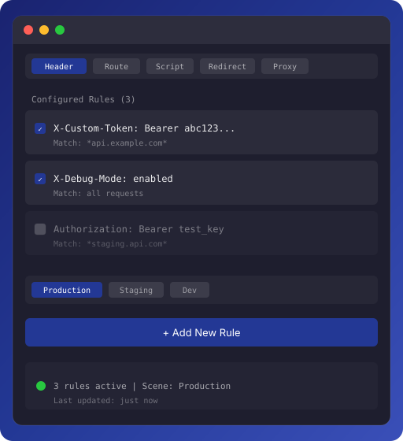

HDR
Header Modify
Add or override custom HTTP headers by URL match for authentication, debug flags, and environment simulation.
Manifest V3 Chrome Extension
A lightweight proxy and debugging tool for frontend developers. Manage request headers, route replacement, script debugging, JS redirects, and proxy server configuration from one extension.
Core features
DevProxy focuses on high-frequency workflows such as environment switching, production issue reproduction, request rewriting, and script replacement. Save a rule, refresh the page, and it takes effect.
Add or override custom HTTP headers by URL match for authentication, debug flags, and environment simulation.
Proxy API or asset requests with matching prefixes to target URLs, ideal for pointing production APIs to local services.
Intercept specific JavaScript files and replace them with custom content for quick validation, reproduction, and fixes.
Redirect selected JS file requests to another URL so production pages can load local or test versions.
Switch between system proxy, direct connection, and custom proxy servers. Pairs well with whistle for network debugging.

How it works
Click the extension icon in the browser toolbar for common actions, or open the configuration center to maintain full rules and scenarios in one place.
Use cases
Redirect JS requests from a production page to a local dev server while keeping the real page context.
Replace production or staging API prefixes with local services to reduce backend environment switching.
Quickly add tokens, debug switches, language markers, or experiment flags to verify server behavior.
Point Chrome proxy settings to a local whistle port for request inspection, rewriting, and replay.
Quick start
Click the DevProxy icon in the Chrome toolbar to open the popup or configuration center.
Select the feature you need: Header, Route, Script, Redirect, or Proxy.
Set the match URL, target URL, header value, script content, or proxy server port.
Save and enable the rule, then refresh the target page to confirm requests and scripts behave as expected.
Permissions
DevProxy requests permissions only to perform development debugging actions that users explicitly configure. The notes below are suitable for Chrome Web Store review and user understanding.
Privacy
DevProxy is a local tool for development debugging. It does not include analytics SDKs and does not upload browsing history, request content, or configuration to external servers.
Rules and preferences are saved in Chrome local storage and used only for extension features.
Header, route, script, redirect, and proxy rules are created, enabled, and deleted by users.
The extension has no default telemetry, ad tracking, or third-party data sale behavior.
FAQ
Confirm the rule is enabled, the URL prefix matches correctly, and the target page has been refreshed. Script replacement rules should be enabled before the page loads.
Yes. Header, Route, Script, Redirect, and Proxy features are independent and can be combined into different debugging scenarios.
whistle is recommended. After starting whistle, enter the local address and port in DevProxy's proxy server settings.
It is mainly intended for development debugging. Pause scenarios or disable rules when you are not debugging to avoid affecting normal browsing.
DevProxy turns common proxy, redirect, and request rewriting capabilities into simple, controllable rules that help frontend developers locate issues, switch environments, and validate fixes faster.